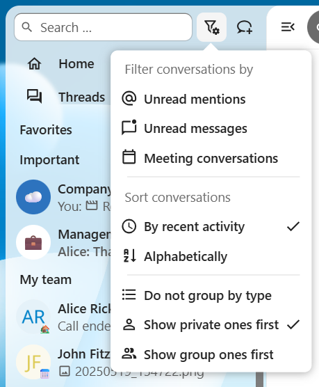

Görüşmeleri düzenlemek
Nextcloud Konuş, görüşmelerini verimli bir şekilde düzenlemek ve yönetmek için özellikler sunar.


Sıralama ve gruplama
Görüşmelerin listede nasıl görüneceğini özelleştirebilirsiniz. Sıralanabilirler:
Son etkinliğe göre: En son etkin olan görüşmeleri üstte görüntüler (varsayılan)
Alfabetik: Görüşmeleri ada göre alfabetik olarak sıralar
Benzer türler de birlikte gruplanabilir:
Türe göre gruplanmasın: Tüm görüşmelerin listesini düz tutar
Kişisel olanlar üstte sıralansın: Gruplar ve herkese açık görüşmelerden önce kişisel görüşmeleri görüntüler
Grup olanlar üstte sıralansın: Kişisel olanlardan önce grup ve herkese açık görüşmeleri görüntüler


Ayrıca şunlara da bakabilirsiniz: